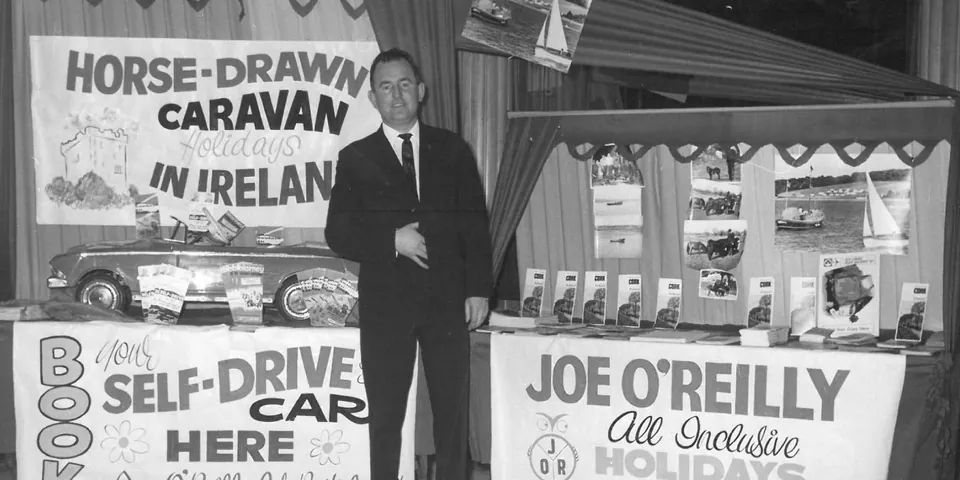
Ireland's DMC SINCE 1966
Pictured: Founder and CEO Joe O'Reilly at a trade exhibition in 1966.
The Story of Ireland's DMC since 1966
Joe was a true pioneer of Irish Tourism. Having worked in the Car Hire business in both Ireland and the United States he came back to Ireland and formed his own company in 1966. He was the first ever DMC in Ireland, selling his wares at the time, mainly in the USA, United Kingdom and mainland Europe. He did this by attending international trade shows.
Over time Joe developed brands in the following sectors: DMC, Car hire, Horse Drawn Caravans, International Horse Riding Academy, Travel Agencies and a Tour Operator. In 1998, Joe’s son Bernard bought out the DMC side of the business from the family and went on to develop the Joe O’Reilly Ireland DMC brand with Offices in both Dublin and Cork, covering the Island of Ireland.
History of Joe O'Reilly Ireland DMC

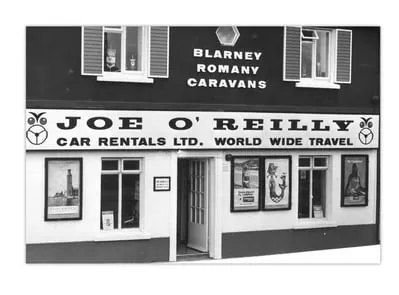
Joe O’Reilly Ireland opens its doors at Lancaster House, Lancaster Quay, Cork City.

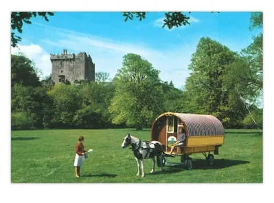
Joe O'Reilly designs and builds 50 horse-drawn caravans at Blarney and had 117 horses, catering to an international clientele interested in holidaying in Ireland at a much slower pace.

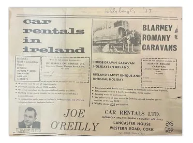
Seeing the demand for Ireland as a destination from his travels selling Ireland, he saw the demand for Car Hire and opened Joe O’Reilly Car Rentals.

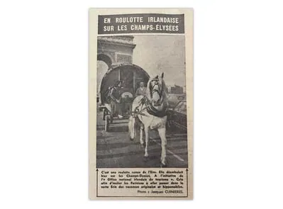
To garner up interest in the French market for his Horse drawn produce he took one of his caravans and horses to Paris and did a publicity stunt on the Champs-Élysées.

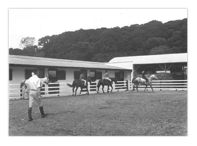
Joe launched Ireland's first International Horse Riding Academy, headed up by Major Bill Ritchie, retired Chef d'Équipe of the English Army Equestrian Team.

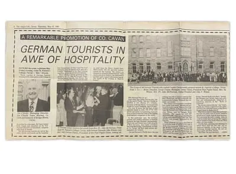
In the 80s and 90s, the M.I.C.E market was developing and we welcomed a German group from Hewlett Packard and held their Gala Dinner in an Irish Boarding School.

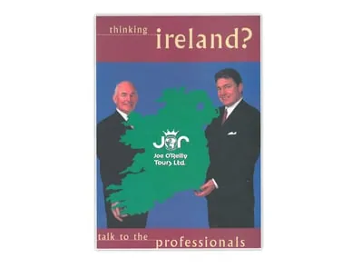
JOR Ireland DMC has a new CEO – Joe's son and protogé, Bernard O'Reilly.

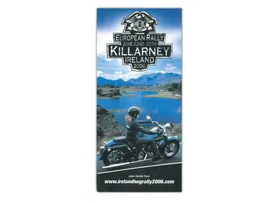
JOR Ireland DMC, with Harley Davidson, hosts 4,500 bikers to a week of open rallies and events in Kerry, Ireland.

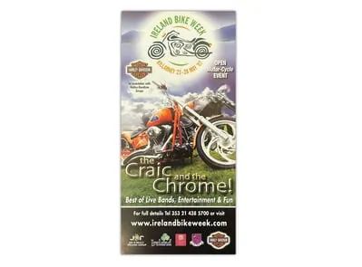
JOR Ireland DMC creates and launches Ireland's inaugural "International Bike Week" – an annual festival of biking still celebrated every year.

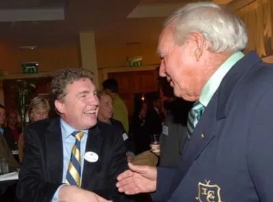
Joe O’Reilly Ireland Golf was to privileged work with Mr. Arnold Palmer on the Ryder Cup at the K Club in 2006. Pictured here with CEO Bernard O'Reilly.
Speak With Our Expert Team
Contact Us
Call: +353 181 20 200
Email: mice@jorireland.com
Address:
Block A,
Santry Business Park,
Airport Road,
Dublin 9, D09 P5F8
Call: +353 214 385 700
Email: sales@jorireland.com
Address:
River House,
Blackpool Retail Park,
Cork, T23R5TF
Maude Breteau, Sales Director,
French-Speaking Markets
Call: +336 3202 1000
Email: mbreteau@jorireland.com
Sean Reilly, Sales Director,
North America
Call: +1 913 706 0784
Email: sreilly@jorireland.com